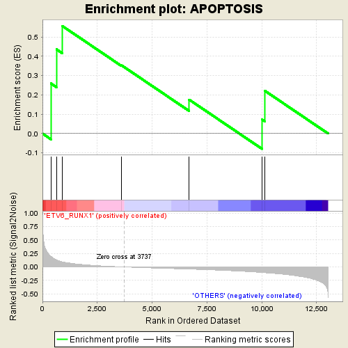

| | | Dataset | expr_all.labels_ETV6_RUNX1.cls#ETV6_RUNX1_versus_OTHERS |
| Phenotype | labels_ETV6_RUNX1.cls#ETV6_RUNX1_versus_OTHERS |
| Upregulated in class | ETV6_RUNX1 |
| GeneSet | APOPTOSIS |
| Enrichment Score (ES) | 0.5567612 |
| Normalized Enrichment Score (NES) | 1.2777171 |
| Nominal p-value | 0.17671518 |
| FDR q-value | 0.17671518 |
| FWER p-Value | 0.085 |
Table: GSEA Results Summary

Fig 1: Enrichment plot: APOPTOSIS
Profile of the Running ES Score & Positions of GeneSet Members on the Rank Ordered List
| PROBE | DESCRIPTION
(from dataset) | GENE SYMBOL | GENE_TITLE | RANK IN GENE LIST | RANK METRIC SCORE | RUNNING ES | CORE ENRICHMENT | | 1 | NTRK1 | NA | | | 383 | 0.196 | 0.2600 | Yes |
| 2 | IRAK3 | NA | | | 636 | 0.132 | 0.4365 | Yes |
| 3 | NFKBIA | NA | | | 910 | 0.095 | 0.5568 | Yes |
| 4 | RIPK1 | NA | | | 3585 | 0.003 | 0.3553 | No |
| 5 | NGF | NA | | | 6688 | -0.040 | 0.1760 | No |
| 6 | MAP3K14 | NA | | | 10016 | -0.103 | 0.0729 | No |
| 7 | CHUK | NA | | | 10147 | -0.107 | 0.2212 | No |
Table: GSEA details [plain text format]
Fig 2: APOPTOSIS
Blue-Pink O' Gram in the Space of the Analyzed GeneSet
Fig 3: APOPTOSIS: Random ES distribution
Gene set null distribution of ES for APOPTOSIS